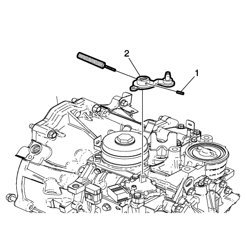
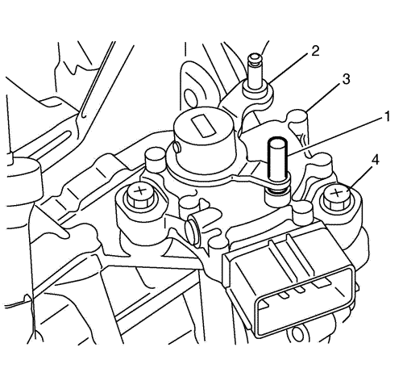

Sustitución del interruptor de posición de estacionamiento / punto muerto
Herramientas especiales
DT-50189 Punzón botador
Si desea informarse sobre herramientas regionales equivalentes, consultar Herramientas especiales .
Procedimiento de desmontaje
- Aplique el freno de estacionamiento y coloque la palanca del cambio manual de la caja de cambios en la posición de punto muerto.
- Desmonte la bandeja de la batería. Consultar Sustitución de la bandeja de la batería .
- Extraiga el conjunto del filtro de aire. Consultar Sustitución del conjunto del filtro de aire .
- Desmonte el tubo flexible de entrada del radiador. Consultar Sustitución del tubo flexible de entrada del radiador .
- Desmonte el tubo flexible de salida del radiador. Consultar Sustitución del tubo flexible de salida del radiador .

- Desconecte el terminal del cable de la palanca selectora del cambio (1) de la palanca selectora del cambio.
- Presione las lengüetas del clip de retén hacia adentro para soltar el cable de la palanca selectora del cambio (2) del soporte del cable.

- Desmonte el pasador de la palanca selectora de rango de la caja de cambios (1) usando el punzón DT-50189.
- Extraiga la palanca selectora de la posición del cambio (2).

- Desemborne el conector eléctrico del selector de posición estacionamiento/punto muerto (PNP) (1)
- Desmonte el tornillo del selector de PNP (2).
- Desmonte el selector de PNP (3).
Procedimiento de montaje
- Asegúrese de que la palanca del cambio manual de la caja de cambios está en la posición de punto muerto.
- Monte el selector de PNO en el eje manual, y apriete temporalmente los tornillos del selector de PNP.
- Monte la palanca selectora de rango (2) en el eje manual, y monte el pasador de la palanca selectora del cambio (1).

- Mueva la palanca selectora de rango (2) a punto muerto.
- Inserte un pasador de 3 mm (0,11 pulg.) (broca de taladro) (1) en los agujeros de posicionamiento del selector PNP (3) y la palanca selectora de rango.
Precaución: Consulte Precaución con las fijaciones en la sección Prólogo
- Monte los pernos del selector de PNP (2) y apriételos a 3 N·m (27 lib. pulg.).
- Enchufe el conector eléctrico de PNP (1) en el selector de PNP (3).
- Monte el cable de la palanca selectora del cambio (2) en el soporte del cable.
- Conecte el terminal del cable de la palanca selectora del cambio (1) en la palanca selectora del cambio.
- Compruebe el ajuste del cable de la palanca selectora de velocidad. Consultar Ajuste del cable de la palanca selectora .
- Monte el tubo flexible de salida del radiador. Consultar Sustitución del tubo flexible de salida del radiador .
- Monte el tubo flexible de entrada del radiador. Consultar Sustitución del tubo flexible de entrada del radiador .
- Monte el conjunto del purificador de aire. Consultar Sustitución del conjunto del filtro de aire .
- Monte la bandeja de la batería. Consultar Sustitución de la bandeja de la batería .
| © Copyright Chevrolet. Reservados todos los derechos |